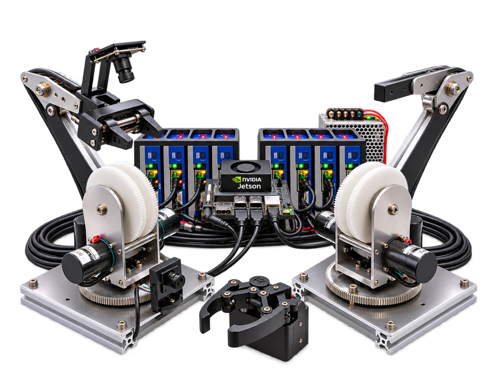
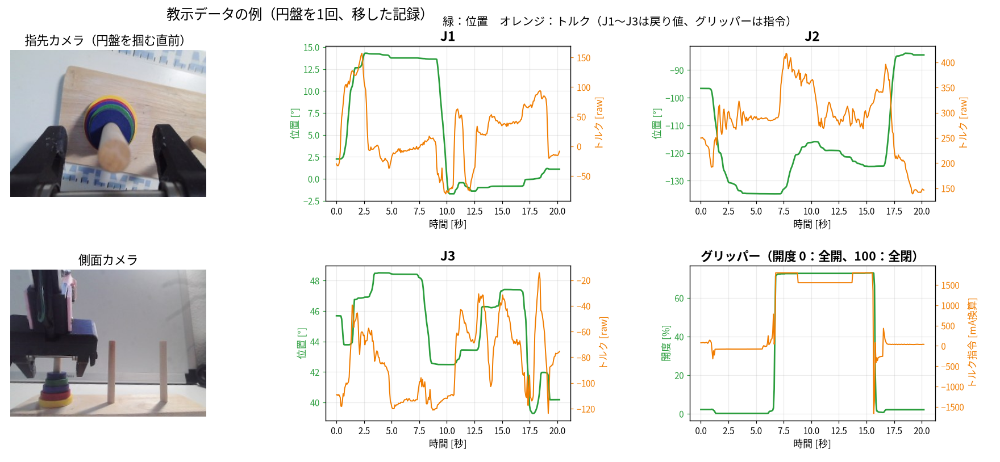

DEMO 01 / SYSTEM VIEW
AIが学習した動きで、円盤を移す。
人の教示から学習したAIが、カメラ画像とアームの状態を見ながら、次の動作を生成して円盤を移します。位置をあらかじめプログラムして再生しているのではありません。
EtherCAT通信周期 250µs。
サーボドライバー「MTL-MC300」とDDモーターを組み合わせ、MTL Kohaku-Entryの全8軸を制御。高速な通信を生かした制御基盤と、その応用としての模倣学習をご紹介します。

EtherCAT対応サーボドライバー
EtherCAT通信周期
全8軸の実機構成
MTL-MC300ドライバー群が、EtherCATを介して制御指令と状態フィードバックを250µs周期でやり取りします。アームにはMDH3018、教示用のマスターグリッパーにはMDH4018、スレーブグリッパーにはMDH2006を採用。Jetson Orin Nanoを上位コントローラーとした、全8軸の実機構成です。
※250µsはEtherCATの通信周期です。カメラの撮影周期やAIの推論周期を示すものではありません。
| アーム名 | MTL Kohaku-Entry（マスター／スレーブ） |
|---|---|
| 制御コンピューター | NVIDIA Jetson Orin Nano |
| サーボドライバー | MTL-MC300 |
| 通信方式・周期 | EtherCAT ／ 250µs（0.25ms） |
| アーム用モーター | MDH3018 |
| マスターグリッパー（教示用） | MDH4018 |
| スレーブグリッパー | MDH2006 |
| 軸数 | 全体で8軸 |
| 教示・学習 | 電流制御を基盤とした力覚バイラテラル制御 ／ Diffusion Policy |
MTL-MC300とDDモーターによる実機制御に、AIの動作生成を組み合わせました。活用例として、Diffusion Policyを用いた円盤の移動作業をご紹介します。
今回の題材は、ハノイの塔です。ロボットアーム「MTL Kohaku-Entry」では、電流制御を基盤とした、力覚バイラテラル制御を用いて教示を行います。アームの自重による負荷を重力補償（ZeroG）で低減し、マスター・スレーブ間で動作と反力を双方向に伝達します。操作者はスレーブ側の接触反力を感じながら、円盤を移す動作を実演します。その際のカメラ画像や関節の動きなどを記録し、Diffusion Policyで学習させました。
円盤をつかむ位置や移動する軌道を、一つひとつ手順としてプログラムするのではなく、人の実演をもとに学習したモデルが動作を生成します。AIが生成する動作と、実機のモーター制御を組み合わせた取り組みです。
DDモーターと、250µs周期のEtherCAT通信により、マスターとスレーブの間で、動作と反力をやり取りします。操作者は、スレーブ側の接触を感じながら、教示を行えます。

| ① 人が教える | 重力補償（ZeroG）と力覚フィードバックを用いて作業を教示し、画像と動作のデータを収録します。 |
|---|---|
| ② AIが学ぶ | 収録データを使い、Diffusion Policyで動作を学習します。 |
| ③ 実機で動かす | 学習済みモデルの出力を実機の制御につなぎ、動作を検証します。 |
※モデルの学習は、Jetsonとは別のPCで行いました。
円盤を移す動作、途中で台の位置を変えた際の挙動、参考として、Raspberry Pi 5 を使ったデモ（円盤を積む動き、トルク制御のグリッパー）もご覧いただけます。
人の教示から学習したAIが、カメラ画像とアームの状態を見ながら、次の動作を生成して円盤を移します。位置をあらかじめプログラムして再生しているのではありません。
作業中に台を動かしても、AIがカメラ画像から位置の変化を捉え、掴む動きを修正します。
MTL-MC300、EtherCAT、DDモーターに、Raspberry Pi 5 を組み合わせた、その他のデモです。グリッパーの握る力を、電流（トルク）で制御しており、円盤の積み重ねに加えて、割れやすいポテトチップスや、やわらかい綿も、つぶさずにつかめます。円盤を積む動きでは、積み重ねた円盤の高さも、トルクの検知で判断しています。
※これらの動作は、あらかじめ設計したプログラムによるもので、AIによる学習・生成ではありません。